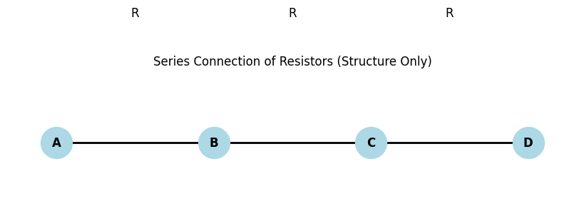
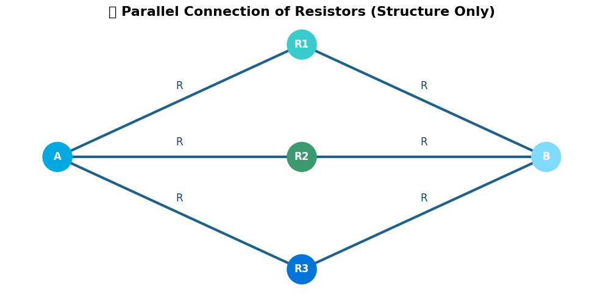

Problem 1
📘 Equivalent Resistance Using Graph Theory
🧠 General Understanding (Applies to Both Options)
To analyze and simplify circuits using graph theory, we first need to understand how to model an electrical circuit as a graph and how classical rules like series and parallel combinations map onto this model.
🔌 Circuit as a Graph
A circuit can be represented as a weighted undirected graph:
- Nodes (Vertices): Represent electrical junctions or connection points.
- Edges: Represent resistors, where the edge weight equals the resistance value \(R\) in ohms \((\Omega)\).
🔹 Example Mapping:
| Circuit Element | Graph Element | Notes |
|---|---|---|
| Junction | Node \(v_i\) | No resistance associated |
| Resistor \(R\) | Edge \(e_{ij}\) | Connects nodes \(v_i \leftrightarrow v_j\), with weight \(R\) |
🔁 Series and Parallel in Graph Terms
🔸 Series Connection:

- Two resistors \(R_1\) and \(R_2\) are in series if:
- They are connected end-to-end.
- There is no branching at the middle junction.
- In graph terms: a node with degree 2 where both edges are resistors.
Equivalent Resistance:
🔸 Parallel Connection:

- Two resistors \(R_1\) and \(R_2\) are in parallel if:
- Both ends of the resistors are connected to the same pair of nodes.
- In graph terms: multiple edges between the same two nodes.
Equivalent Resistance:
🧩 Identifying Nested Series-Parallel Combinations
Nested combinations occur when series and parallel blocks are combined hierarchically, for example:
- A parallel block of resistors, each of which is itself a series of two resistors.
- A series of blocks, where each block is a parallel structure.
🔍 Strategy to Simplify:
- Recursively identify and reduce:
- Lowest-level series groups.
- Lowest-level parallel groups.
- Replace each group with a single equivalent resistance.
- Repeat until the entire circuit is reduced to a single equivalent resistor between the source and destination.
🛠 Tools for Detection:
- Node Degree:
- Degree-2 nodes likely indicate series connections.
-
Multiple edges between nodes indicate parallel paths.
-
Graph Traversal:
- DFS/BFS can help trace paths and identify reducible structures.
🧠 Summary
| Concept | Graph Term | Simplification Rule |
|---|---|---|
| Junction | Node | No resistance, used for connection |
| Resistor | Edge with weight \(R\) | Carries resistance between two nodes |
| Series connection | Path through degree-2 node | \(R_{eq} = R_1 + R_2 + \dots\) |
| Parallel connection | Multi-edges between nodes | \(\frac{1}{R_{eq}} = \sum \frac{1}{R_i}\) |
| Nested configurations | Subgraphs | Reduce inner groups first recursively |
📘 Option 1: Simplified Task – Algorithm Description
🧠 Conceptual Overview
To compute the equivalent resistance between two nodes in a circuit using graph theory, the goal is to reduce the graph by successively collapsing:
- Series connections into single equivalent resistors
- Parallel connections into a single equivalent resistor
- Nested structures recursively
The final output should be a single resistor representing the total resistance between the two terminals.
🔍 Key Concepts
🔸 Graph Representation
- Each junction is a node \(v_i\)
- Each resistor is an edge \(e_{ij}\) with weight \(R_{ij}\)
- The full circuit is a graph \(G = (V, E)\) with:
- \(V\): set of nodes
- \(E\): set of edges with resistance weights
🔸 Series Connection Detection
Condition: A node \(v_k\) has exactly two neighbors \(v_i\) and \(v_j\), and:
- There is no other connection or branching at \(v_k\)
- Resistors \(R_1\) and \(R_2\) are connected as \(v_i - R_1 - v_k - R_2 - v_j\)
Combine into:
🔸 Parallel Connection Detection
Condition: Multiple edges between the same pair of nodes \((v_i, v_j)\):
- \(e_{ij}^{(1)}, e_{ij}^{(2)}, \dots, e_{ij}^{(n)}\)
Combine using:
🧩 Handling Nested Configurations
Nested configurations are simplified by recursively applying the same logic:
- Innermost groups are simplified first.
- As reductions occur, new series or parallel patterns may emerge.
- These are detected again in the next iteration.
Example:
A resistor network like ((R1 + R2) || (R3 + R4)) + R5 is handled by:
- Reducing \(R_1 + R_2\)
- Reducing \(R_3 + R_4\)
- Applying parallel reduction
- Adding \(R_5\)
🔀 Cycles and Branching
Cycles complicate the detection of series/parallel patterns.
- Basic series/parallel rules apply only to acyclic subgraphs
- For graphs with cycles:
- Use graph traversal algorithms (DFS, BFS) to identify simplifiable substructures
- Apply loop transformation rules like:
- Delta-Wye (Δ-Y) Transformations
- Kirchhoff’s laws in advanced versions
For now, this simplified algorithm does not handle arbitrary cycles; it's best suited for series-parallel graphs.
📌 Summary
| Feature | Handled in Algorithm | Method |
|---|---|---|
| Series connections | ✅ Yes | Node degree = 2, combine resistors |
| Parallel connections | ✅ Yes | Multiple edges between two nodes |
| Nested combinations | ✅ Yes | Recursive simplification |
| Cycles | ❌ Basic only | Requires advanced methods |
# 📈 Series Connection Visualization (Structure Only)
import matplotlib.pyplot as plt
import networkx as nx
# Create a simple graph
G = nx.Graph()
# Define nodes
nodes = ["A", "B", "C", "D"] # 3 resistors: A-B, B-C, C-D
G.add_nodes_from(nodes)
# Define edges as series resistors
edges = [("A", "B"), ("B", "C"), ("C", "D")]
G.add_edges_from(edges)
# Position nodes in a line (series layout)
pos = {
"A": (0, 0),
"B": (1, 0),
"C": (2, 0),
"D": (3, 0)
}
# Draw the graph
plt.figure(figsize=(8, 2))
nx.draw(G, pos, with_labels=True, node_color="lightblue", node_size=1000, font_weight="bold")
nx.draw_networkx_edges(G, pos, width=2)
# Annotate edges with 'R' to indicate resistor (without values)
for (u, v) in G.edges():
x = (pos[u][0] + pos[v][0]) / 2
y = (pos[u][1] + pos[v][1]) / 2 + 0.1
plt.text(x, y, "R", fontsize=12, ha="center", va="center")
plt.title("Series Connection of Resistors (Structure Only)")
plt.axis("off")
plt.show()
# 🎨 Parallel Connection Visualization with Styled Colors
import matplotlib.pyplot as plt
import networkx as nx
# Create graph
G = nx.Graph()
# Define nodes
nodes = ["A", "B", "R1", "R2", "R3"]
G.add_nodes_from(nodes)
# Add edges for 3 parallel paths from A to B
G.add_edges_from([
("A", "R1"), ("R1", "B"),
("A", "R2"), ("R2", "B"),
("A", "R3"), ("R3", "B")
])
# Define layout positions
pos = {
"A": (0, 0),
"R1": (1.5, 1.5),
"R2": (1.5, 0),
"R3": (1.5, -1.5),
"B": (3, 0)
}
# Create figure
plt.figure(figsize=(10, 5))
plt.title("🌐 Parallel Connection of Resistors (Structure Only)", fontsize=16, fontweight='bold')
# Draw nodes with cool colors
node_colors = ["#00A9E0", "#7FDBFF", "#39CCCC", "#3D9970", "#0074D9"]
nx.draw_networkx_nodes(G, pos, node_color=node_colors, node_size=1200)
# Draw edges with uniform color and thickness
nx.draw_networkx_edges(G, pos, edge_color="#1F618D", width=3)
# Draw labels
nx.draw_networkx_labels(G, pos, font_size=12, font_weight="bold", font_color="white")
# Annotate resistor edges with 'R'
for r_node in ["R1", "R2", "R3"]:
# Left side label
x1 = (pos["A"][0] + pos[r_node][0]) / 2
y1 = (pos["A"][1] + pos[r_node][1]) / 2
plt.text(x1, y1 + 0.2, "R", fontsize=12, color="#154360", ha="center", va="center")
# Right side label
x2 = (pos["B"][0] + pos[r_node][0]) / 2
y2 = (pos["B"][1] + pos[r_node][1]) / 2
plt.text(x2, y2 + 0.2, "R", fontsize=12, color="#154360", ha="center", va="center")
# Clean display
plt.axis("off")
plt.tight_layout()
plt.show()